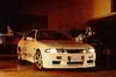
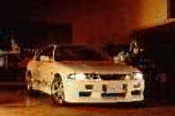
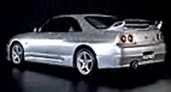
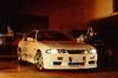

Nissan Skyline GT-R
The old one pictured above

The all NEW Nissan Skyline GT-R

The old one is pictured on the right
Specs(old(96)/new(99))
Price |
$54,600 / $45,000-$50,000 |
Top Speed |
113mph(electronically limited) / same |
Acceleration |
|
Engine |
|
0-30mph |
N/A |
Type |
Twin turbo I-6, 24valve DOHC / same |
0-60mph |
4.5sec / N/A |
Displacement |
2.6L(2568cc) / same |
0-100 |
N/A |
Power |
280hp@6800rpm/ same(this is below the actual peek) |
1/4 mile |
13.1sec/104.9mph / under 13sec |
Torque |
271? lbs-ft @4400rpm / 289 lbs-ft@4400rpm |
Weight |
3,400 lbs / same? |
Handling |
|
Gas mileage |
|
Skidpad |
N/A |
City |
N/A |
600ft slalom |
N/A |
Highway |
N/A |
Powertrain |
Front engined, All wheel drive, 4 wheel steering, 6 speed manual |
(? = incomplete data or unverified info, N/A = info Not Available)
Note: The actual horse power figures are most likely 320hp(old version) and 340-350hp(new version).
Beyond the specs:
The replacement for the amazing Nissan Skyline GT-R, this new Skyline GT-R looks bolder than the much softer GT-R that it is replacing. This car is to Japan as the Corvette is to the US, it is a national icon, and anyone who drives it will quickly see why. This Nissan comes with an excellent all wheel drive system and four wheel steering to help provide this car with its excellent handling. This car is claimed to only have 280hp because Japanese officials think that 300hp is too much, but it is no secrete that this car has more than that. That fact combined with the amazing tuning potential (1000hp rumored to be possible) of this 8000rpm limited car results in a vehicle the can outperform a Corvette and even challenge a Dodge Viper will outdoing both in refinement and comfort. For those who like tuning, it will not cost you much to make this car a lot faster. However, if you do not like tuning it, it is good the way it comes for this highly refined sports car is readily shows the mechanical genius of Nissan. Its high rpm engine has good torque for an 8000rpm screamer; it will easily launch you past 60mph faster than a Corvette could, if you know to drive it. Just be careful, because with the traction of its AWD you just might wear down its clutch trying to drag race from every stoplight you can find. In this car, you are not likely to experience wheel spin unless the road conditions are bad (or if you launch at 7000rpm). The handling in this car is amazing with that old oversteer problem fixed, entry and exit into and out of the turns is wonderful although its limits are not the highest in its class. Priced under $50,000 this car is a steal and it will reward the owner who dares to crush the throttle. This is one beautiful car, and it looks good too! If you have been searching for great performance, a good ride, a bit of luxury, and all wheel drive all in one package your search is over. Unfortunately, if your in America you will have to wait until it is arrives here, and when it does it might cost a bit more than it does in Japan.
~Oracle